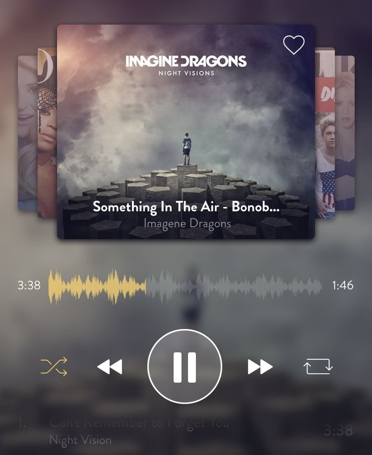

Navigate a key through five maze levels using arrow keys,
aiming to reach a house with the fewest moves. From easy to extreme,
test your strategic thinking and agility in this engaging maze game.

Music Player
This music player has several features like you can loop, repeat or shuffle a song,
play/pause a song or play the next or previous song. You can view your songs list
and also know which song is currently playing and you can also select the song from
the list to play.
Online Restaurant Menu
online restaurant menu, seamlessly browse selectable dishes, add items to your cart,
and view the total price for a hassle-free ordering experience from the comfort of
your device.